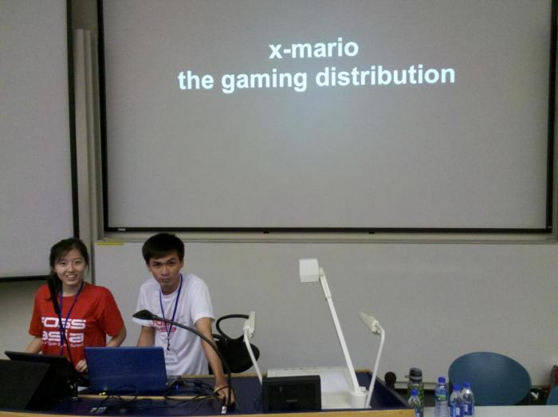
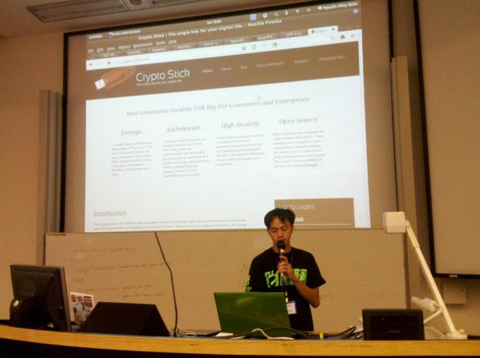
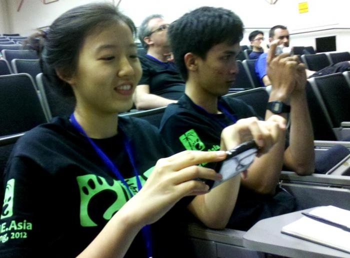
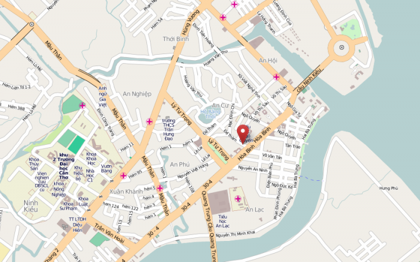
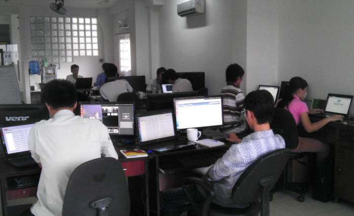
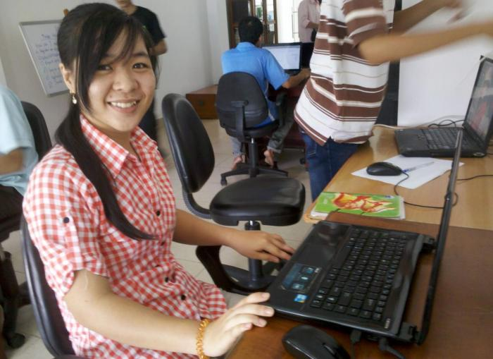
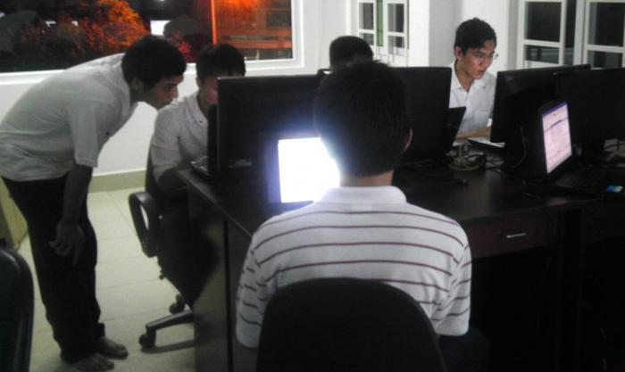
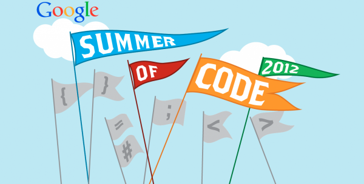

Blog
FOSSASIA community meetup at GNOME.Asia 2012
 GNOME.Asia Hong Kong 2012
GNOME.Asia Hong Kong 2012
FOSSASIA members had a wonderful get together at GNOME.Asia 2012 in Hong Kong.
About GNOME.Asia Summit. The event is Asia’s GNOME user and developer conference, spreading the knowledge of GNOME across Asia. The event focuses primarily on the GNOME desktop and other devices that use GNOME, and also covers GNOME-based applications and GNOME development platform tools.
It brings together the GNOME community in Asia to provide a forum for users, developers, foundation leaders, governments and businesses to discuss both the present technologies and future developments.
The FOSSASIA team presented the two projects: crypto-stick and the x-mario gaming distribution.
A big thanks for this fantastic event goes to the local and global organization team and the GNOME Foundation, in particular to Max, Haggen So and Sammy Fung.
Hong Phuc Dang also received travel sponsorship from the GNOME Foundation and thus increased the participation numbers from Vietnam to three contributors.
 GNOME.Asia Hong Kong 2012
GNOME.Asia Hong Kong 2012
FOSSASIA sponsored developer at GNOME.Asia about x-mario gaming project
Hon Nguyen held a talk supported by me at the GNOME.Asia event in Hong Kong about the x-mario gaming project.

The slides are here..
Crypto Stick project presented by Quan Nguyen at GNOME.Asia
We are a group of four people representing the FOSSASIA organization at GNOME.Asia. Hon Nguyen, one of the developer of Crypto Stick also gave a presentation at the event in Hong Kong.
Quan Nguyen at GNOME.Asia 2012 in Hong Kong
Hong Phuc DANG (left) and Hon Nguyen (right) taking photos during GNOME.Asia 2012
Mekong Delta Map Sprint

When it comes to Free and Open Source Software there are a lot of useful tools out there to make use of maps. But how useful is it, if there is no map data?
This was the reason for focusing our attention on maps of the Mekong Delta. For two months we cooperated with companies and universities in the Mekong Delta and we welcomed 10 students to work with us to improve the maps in the area. We did with different tools including Open Source Android apps and satellite images.
Check out the OSM Beginner's Guide to become a map contributor as well!
Everyone loves pics. So here are a few pictures of the hard-working students.



FOSSASIA accepted as Google Summer of Code organization
FOSSASIA has been accepted as mentor organization for the Google Summer of Code 2012. It is fantastic to join the international free software community in the study program and we are looking forward to student applications.

Applications can be added through the GSoC website. Please also introduce your ideas on the mailing list and add them to the ideas page. If you are proposing an idea for a subproject like Cryptostick, people on the list will direct you to specific contact points if needed.
FOSSASIA is acting as an umbrella organization for projects related to Asian users and the community in the region. We welcome applications from student projects around the world who work on software tools benefiting users in the region.
The FOSSASIA Google Summer of Code program is looking for applications including:
- software development for projects supporting social change;
- internationalization projects benefitting users in the region, e.g. support for Asian fonts in applications and enhancing user experience;
- software for secure communication and user security including support for international Asian users;
- decentral systems for new use cases in emerging regions;
- educational development projects;
- localized free software distributions (e.g. regional Linux distributions);
If you are a student there are important links to follow:
- Idea Page: http://fossasia.org/gsoc-ideas
- Mailing List http://groups.google.com/group/fossasia
- FOSSASIA GSoC Page http://www.google-melange.com/gsoc/org/show/google/gsoc2012/fossasia
- Google Open Source Programs: http://socghop.appspot.com